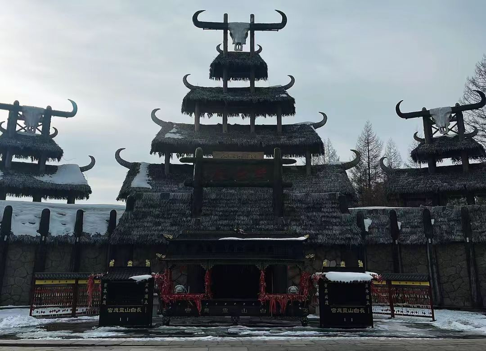

传奇：长白山古建筑群是清朝皇室祭祀长白山神的皇家祭祀建筑群，是中国古代祭祀山岳的最高等级建筑遗存。位于吉林省长白山保护开发区池北区（原二道白河镇），主要包括长白山神庙、祭坛、行宫、碑亭等建筑。始建于清康熙十六年（1677年），是清朝"龙兴之地"的祭祀中心，体现了满族萨满教信仰与儒家祭祀文化的完美融合，具有极高的历史、文化和建筑价值。
核心建筑：
游览攻略：
交通信息：位于长白山北坡，距二道白河镇15公里。从长白山机场乘机场大巴到二道白河，再打车前往。从延吉、敦化、白山等地有长途汽车到二道白河。建议与长白山天池、瀑布、温泉组成"神山朝圣之旅"。
满族起源：长白山是满族的发祥地，被视为"神山"和"祖地"。据《清太祖武皇帝实录》记载，满族始祖布库里雍顺是天女佛库伦在长白山天池沐浴时吞食神鹊所衔朱果而生。这一"天女浴躬池"传说，使长白山成为满族的神圣起源地。清皇室自认是布库里雍顺的后裔，尊长白山为"龙兴之地"。
康熙敕建：清康熙十六年（1677年），为巩固统治，彰显"君权神授"，康熙帝派内大臣觉罗武默讷、侍卫费耀色等人探查长白山。武默讷登临天池，确认长白山为"龙脉"所在。康熙帝遂敕建长白山神庙，命每年春秋两季由宁古塔将军（后为吉林将军）代皇帝祭祀。这是长白山古建筑群的肇始。
乾隆扩建：乾隆十九年（1754年），乾隆帝东巡吉林，亲临望祭殿遥祭长白山。乾隆四十一年（1776年），为庆祝"十全武功"，乾隆帝大规模扩建长白山神庙，增建碑亭、祭坛、行宫，形成完整的祭祀建筑群。乾隆帝还御制《长白山神告祭文》《长白山神庙碑记》，将长白山祭祀提升到国家祀典的最高等级。
清代祭祀：清代，长白山祭祀列入国家祀典，与泰山、华山、衡山、恒山、嵩山"五岳"并列。每年春秋两季，由吉林将军代皇帝祭祀，仪式隆重：①斋戒三日。②陈设祭品（牛、羊、猪、酒、果）。③宣读祭文。④行三跪九叩礼。⑤焚烧祭品。⑥望祭长白山。遇皇帝登基、大婚、寿辰、凯旋等大事，也遣官祭祀。
近代变迁：清末，国力衰微，祭祀渐废。光绪二十六年（1900年），沙俄入侵东北，建筑遭破坏。民国时期，祭祀停止，建筑荒废。1949年后，列为文物保护单位。1966-1976年，建筑遭严重破坏。1980年代开始修复。2006年，长白山古建筑群被列为全国重点文物保护单位。2012年，大规模修复工程完成，对外开放。
世界遗产潜力：长白山古建筑群已列入《中国世界文化遗产预备名单》。作为中国古代山岳祭祀建筑的杰出代表，满族文化的圣殿，具有申报世界文化遗产的潜力。联合国教科文组织专家考察后认为，其"体现了人类与自然的神圣关系，具有突出普遍价值"。
总体布局：长白山古建筑群坐北朝南，背依长白山，前临二道白河。建筑沿中轴线布置：山门→神道→碑亭→长白山神庙→望祭殿→祭坛。行宫位于轴线东侧。这种"前朝后寝"、"左祖右社"的布局，体现了儒家礼制思想。建筑与自然环境和谐统一，体现了"天人合一"的哲学理念。
建筑风格：建筑风格融合满汉特色：①汉式：主体建筑采用汉式宫殿建筑，重檐歇山顶，黄琉璃瓦，斗拱彩绘，体现皇家威严。②满式：行宫采用满族"口袋房"式四合院，万字炕，索伦杆，体现满族生活习俗。③藏式：部分装饰采用藏传佛教元素，如经幢、法轮，体现清代"满蒙藏"联盟政策。
长白山神庙：祭祀主殿，面阔五间，进深三间，重檐歇山顶，黄琉璃瓦绿剪边。殿身高大，庄严肃穆。殿内供奉长白山神牌位，上悬康熙御书"长白山神"匾额。神案上陈设祭器：铜香炉、烛台、供盘。殿前有月台，是举行祭祀仪式的地方。
望祭殿：两层楼阁，高15米，重檐歇山顶，黄琉璃瓦。登楼可远眺长白山主峰，是"遥祭"的场所。殿内供奉康熙御书"长白山神"牌位，设祭案、香炉。楼上有回廊，可环视四周景色。望祭殿体现了"祭如在"的祭祀理念，即使不能亲临天池，也要遥祭神山。
祭坛：圆形三层汉白玉祭坛，直径20米，高4米。上层设燎炉，用于焚烧祭品。中层设祭案，摆放祭品。下层为广场，是官员、仪仗站立处。祭坛形制仿北京天坛圜丘坛，但规模较小。坛周有汉白玉栏杆，雕有云龙图案。
碑亭：方形重檐碑亭，内立汉白玉石碑。碑身高3米，宽1.2米，厚0.4米。碑文为康熙御制《长白山神告祭文》，满汉文合璧。碑额雕双龙戏珠，碑座为赑屃（龙子）。碑文记述长白山为"龙兴之地"，祭祀缘由，具有重要的历史价值。
萨满信仰：满族原始信仰是萨满教，崇拜自然神祇：天神、山神、水神、火神、祖先神。长白山被视为最重要的山神，是满族的保护神。萨满（巫师）通过跳神、念咒、祭祀，沟通人神。长白山神庙祭祀融合了萨满教的自然崇拜和儒家的祖先崇拜，形成了独特的祭祀文化。
祭祀仪轨：长白山祭祀是清代国家祀典，仪式严格：①斋戒：主祭官斋戒三日，沐浴更衣。②陈设：祭坛陈设太牢（牛、羊、猪）、酒、果、帛。③迎神：奏乐，迎神。④初献：献帛、献酒、读祝文。⑤亚献、终献：再献酒。⑥饮福受胙：主祭官饮福酒，受胙肉。⑦送神：奏乐，送神。⑧望燎：焚烧祭品。整个过程庄严肃穆，体现"敬天法祖"思想。
神话传说：①天女浴躬池：仙女佛库伦在长白山天池沐浴，吞神鹊所衔朱果，生布库里雍顺，是为满族始祖。②神鹊救主：清太祖努尔哈赤被明军追捕，神鹊栖于其头，明军以为枯木，努尔哈赤得救。③神鹿引路：清太宗皇太极狩猎迷路，神鹿引其出山。这些神话强化了长白山的神圣性。
文学艺术：长白山是满族文学艺术的重要题材：①诗词：康熙、乾隆、嘉庆等皇帝作有大量咏长白山诗。②绘画：《长白山图》《天池图》是清代宫廷画的重要题材。③音乐：祭祀音乐庄严肃穆，有《中和韶乐》《庆神欢乐》。④舞蹈：萨满跳神舞，祭祀山神。
民俗活动：①祭山：农历三月二十一、五月十五、九月十二，民间祭祀长白山。②祭祖：满族祭祖时，要面向长白山方向叩拜。③放山：进长白山采人参，要祭拜山神。④狩猎：猎人出猎前，祭拜山神，祈求平安。⑤节庆：春节、中秋等节日，要向长白山方向祭拜。
语言文字：满语称长白山为"果勒敏珊延阿林"（长白山），"安巴代敏嘎珊"（大神山）。满文文献《满文老档》《满洲实录》详细记载了长白山神话。清代，满语是官方语言，长白山祭祀用满语诵祝文。现代满语已濒危，但长白山相关词汇仍被研究。
历史价值：长白山古建筑群是清朝"龙兴之地"的实物见证，记录了满族从部落到王朝的历史进程。它是清代国家祭祀制度的重要遗存，体现了"敬天法祖"、"君权神授"的政治理念。建筑群的兴建、扩建、祭祀活动，反映了清王朝的兴衰历程，是研究清代政治、宗教、民族关系的重要资料。
建筑价值：是中国古代山岳祭祀建筑的杰出代表，融合了汉、满、藏建筑艺术。其"因山就势"的布局，"天人合一"的设计，体现了中国古代建筑与自然环境和谐共生的理念。建筑技术精湛，木结构、砖石结构、琉璃工艺都达到很高水平。是研究清代官式建筑的重要实例。
文化价值：承载了丰富的文化内涵：①宗教文化：萨满教自然崇拜与儒家祖先崇拜的融合。②政治文化："龙兴之地"的神话建构，巩固统治。③民族文化：满族起源、发展、壮大的历史记忆。④生态文化：人与自然和谐共处的生态智慧。⑤艺术文化：建筑、雕塑、绘画、音乐的综合艺术。
科学价值：建筑选址、布局、设计体现了古代科学智慧：①风水学：背山面水，藏风聚气。②建筑学：木结构抗震，砖石耐久。③材料学：青砖、琉璃瓦、汉白玉的选用。④环境学：建筑与环境的和谐。⑤祭祀学：祭祀仪式、祭器、祭品的科学安排。
旅游价值：长白山古建筑群是长白山旅游的重要组成部分，与天池、瀑布、温泉、森林共同构成完整的旅游体系。游客在此可了解满族文化，感受神山崇拜，体验皇家祭祀，欣赏古建筑艺术。年接待游客50万人次，是吉林省重要的文化旅游目的地。
保护传承：2006年列为全国重点文物保护单位后，实施了大规模修复工程：①建筑修缮：按"修旧如旧"原则，修复主要建筑。②环境整治：清理周边环境，恢复历史风貌。③陈列展览：设立"长白山祭祀文化展"，展示文物、图片、文献。④学术研究：举办国际学术研讨会，出版研究著作。⑤教育推广：开展爱国主义教育、民族团结教育。⑥旅游开发：合理利用，可持续发展。